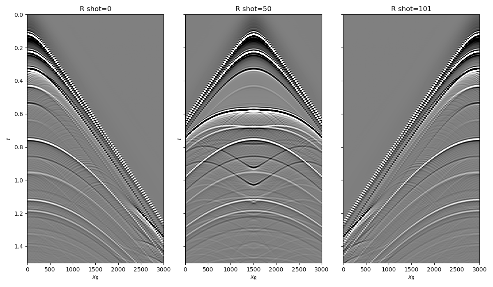
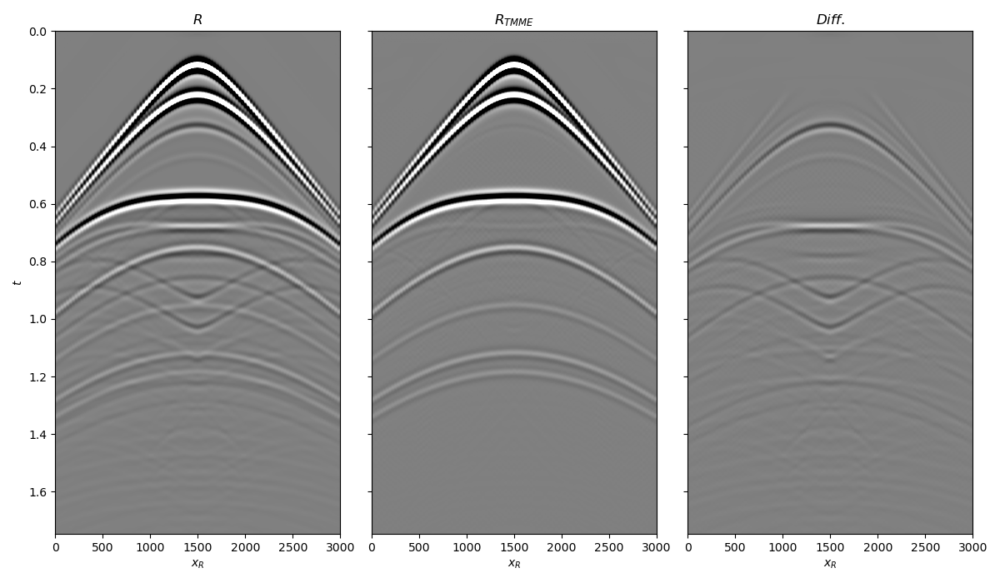

Note
Click here to download the full example code
4. Marchenko Multiple Elimination¶
This example performs internal multiple elimination using the
pymarchenko.mme.MME routine. The MME algorithm can also compensate
for transmission losses provided a proper choice of the windowing function,
here we show how this can be done with our routine.
# sphinx_gallery_thumbnail_number = 3
# pylint: disable=C0103
import warnings
import os
import numpy as np
import matplotlib.pyplot as plt
from scipy.signal import convolve
from pymarchenko.mme import MME
warnings.filterwarnings('ignore')
plt.close('all')
os.environ["OMP_NUM_THREADS"] = "1"
os.environ["MKL_NUM_THREADS"] = "1"
Let’s start by defining some input parameters and loading the geometry
# Input parameters
inputfile = '../testdata/marchenko/input.npz'
vel = 2400.0 # velocity
toff = 0.045 # direct arrival time shift
nsmooth = 10 # time window smoothing
nfmax = 400 # max frequency for MDC (#samples)
niter = 10 # iterations
inputdata = np.load(inputfile)
# Receivers
r = inputdata['r']
nr = r.shape[1]
dr = r[0, 1]-r[0, 0]
# Sources
s = inputdata['s']
ns = s.shape[1]
ds = s[0, 1]-s[0, 0]
# Virtual points
vs = inputdata['vs']
# Density model
rho = inputdata['rho']
z, x = inputdata['z'], inputdata['x']
plt.figure(figsize=(10, 5))
plt.imshow(rho, cmap='gray', extent=(x[0], x[-1], z[-1], z[0]))
plt.scatter(s[0, 5::10], s[1, 5::10], marker='*', s=150, c='r', edgecolors='k')
plt.scatter(r[0, ::10], r[1, ::10], marker='v', s=150, c='b', edgecolors='k')
plt.scatter(vs[0], vs[1], marker='.', s=250, c='m', edgecolors='k')
plt.axis('tight')
plt.xlabel('x [m]')
plt.ylabel('y [m]')
plt.title('Model and Geometry')
plt.xlim(x[0], x[-1])
plt.tight_layout()

Let’s now load and display the reflection response
# Time axis
t = inputdata['t'][:-100]
ot, dt, nt = t[0], t[1]-t[0], len(t)
# Reflection data (R[s, r, t])
R = inputdata['R'][:, :, :-100]
R = np.swapaxes(R, 0, 1) # just because of how the data was saved
wav = inputdata['wav']
wav_c = np.argmax(wav)
fig, axs = plt.subplots(1, 3, sharey=True, figsize=(12, 7))
axs[0].imshow(R[0].T, cmap='gray', vmin=-1e-2, vmax=1e-2,
extent=(r[0, 0], r[0, -1], t[-1], t[0]))
axs[0].set_title('R shot=0')
axs[0].set_xlabel(r'$x_R$')
axs[0].set_ylabel(r'$t$')
axs[0].axis('tight')
axs[0].set_ylim(1.5, 0)
axs[1].imshow(R[ns//2].T, cmap='gray', vmin=-1e-2, vmax=1e-2,
extent=(r[0, 0], r[0, -1], t[-1], t[0]))
axs[1].set_title('R shot=%d' %(ns//2))
axs[1].set_xlabel(r'$x_R$')
axs[1].set_ylabel(r'$t$')
axs[1].axis('tight')
axs[1].set_ylim(1.5, 0)
axs[2].imshow(R[-1].T, cmap='gray', vmin=-1e-2, vmax=1e-2,
extent=(r[0, 0], r[0, -1], t[-1], t[0]))
axs[2].set_title('R shot=%d' %ns)
axs[2].set_xlabel(r'$x_R$')
axs[2].axis('tight')
axs[2].set_ylim(1.5, 0)
fig.tight_layout()

Let’s now create an object of the
pylops.mme.MME class and apply multiple elimination
for a single source.
We can now compare the original dataset with the demultipled one
fig, axs = plt.subplots(1, 3, sharey=True, figsize=(12, 7))
axs[0].imshow(Rwav, cmap='gray', vmin=-1e-1, vmax=1e-1,
extent=(r[0, 0], r[0, -1], t[-1], t[0]))
axs[0].set_title(r'$R$')
axs[0].set_xlabel(r'$x_R$')
axs[0].set_ylabel(r'$t$')
axs[0].axis('tight')
axs[1].imshow(U_minus.T, cmap='gray', vmin=-1e-1, vmax=1e-1,
extent=(r[0, 0], r[0, -1], t[-1], t[0]))
axs[1].set_title(r'$R_{TMME}$')
axs[1].set_xlabel(r'$x_R$')
axs[1].axis('tight')
axs[2].imshow(Rwav - U_minus.T, cmap='gray', vmin=-1e-1, vmax=1e-1,
extent=(r[0, 0], r[0, -1], t[-1], t[0]))
axs[2].set_title(r'$Diff.$')
axs[2].set_xlabel(r'$x_R$')
axs[2].axis('tight')
fig.tight_layout()

Total running time of the script: ( 12 minutes 26.073 seconds)